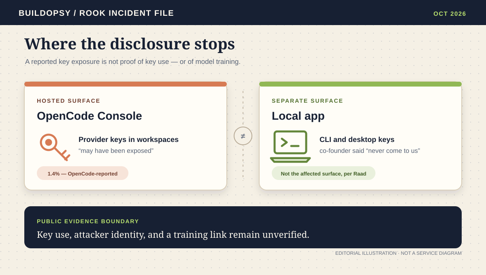
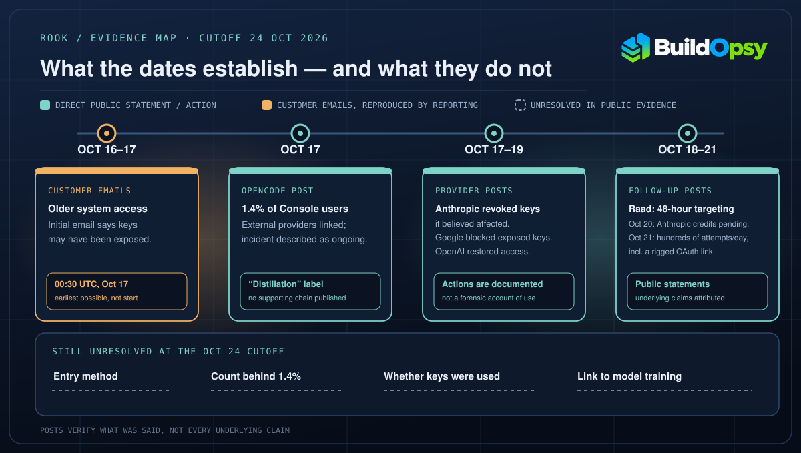

1. The denominator is Console users, not every OpenCode install
OpenCode’s October 17 post said the incident affected 1.4% of “OpenCode Console users,” and that the notified subset had external providers linked. It did not publish the numerator or the total Console-user count, or say whether “impacted” meant users whose keys were confirmed exposed or users whose keys were at risk. The public number therefore gives a share, not an absolute count of people or credentials.
That boundary matters. The hosted Console is not synonymous with the open-source CLI and desktop app. In a reply on October 17, co-founder Dax Raad said the incident concerned “the OpenCode Console, not OpenCode itself,” and that keys configured locally “never come to us.” That is an attributed company-side distinction, not evidence about the unknown entry path into the Console system.
The customer emails are available here only through reporting. Infosecurity Magazine’s October 19 report quotes the initial email as identifying unauthorized access to “a legacy system that we were in the process of decommissioning” and warning that provider keys saved in workspaces “may have been exposed.” A follow-up email, shown in a BleepingComputer screenshot, gave 00:30 UTC on October 17 as the earliest possible exposure of the listed keys and said “at this time no other data appears to have been exposed.” The word “other” distinguishes the possible key exposure from other information; neither email establishes whether any key was copied or used.

2. A possible exposure is not proof of key use
The reported follow-up notice gives 00:30 UTC on October 17 as the earliest possible time at which the affected keys could have been exposed. That is a lower bound stated in a customer notification, not a confirmed access start, the first malicious request, the time of detection, or proof that a key was copied. The same reporting says OpenCode had not disclosed when unauthorized access began. The window cannot be reconstructed from the public timestamps alone.
Users did report charges. Colin Parsons wrote on October 17 that an OpenAI key had incurred $281 and an Anthropic key $168, both keys used only with OpenCode according to his post. The arithmetic is $281 + $168 = $449; Parsons described the spend as “>$400.” Those are two user-reported account amounts, not provider-audited charges or a verified incident total. BleepingComputer also relayed another user’s $1,700 report. Neither report establishes that the usage came from a stolen Console key or was part of model training.
Provider posts document response steps, with limits. Lydia Hallie wrote that Anthropic had revoked Claude API keys it believed were affected. Evan Otero said Google had blocked exposed keys and was working with affected customers and OpenCode. On October 18, Raad said OpenCode refunds were underway. On October 19, Tibo said OpenAI worked with OpenCode to restore access and refund API credits that would have been drawn in the attack. The posts document announced actions; they do not identify the operator behind the activity or independently verify each user’s bill or final reimbursement.
Later posts through October 21 covered remediation and defense rather than the original questions. On October 19, Raad said OpenCode was speaking with labs about better protocols and that other, unnamed products had been hit in recent days. On October 20, answering a user who still had no Anthropic credits back, he said Anthropic was “working through it this week” and that OpenCode would “send from our side” if the provider did not finish. On October 21, he said OpenCode was still seeing “hundreds of completely different attempts every day,” citing a PlanetScale OAuth flow “set to send credentials to an attacker” and, in a later reply, an attempt through the enterprise contact form aimed at a locally running OpenCode server. He did not say any of those attempts succeeded or that more data was exposed. None of the posts describes how the legacy system was entered, which exposed keys were used, or what evidence connects key use to training.
3. “Distillation” is the label; the bridge is unpublished
OpenCode’s public statement linked the breach to a “large scale distillation attack.” It did not identify an actor or publish query logs, a model-output collection path, a training dataset, or other evidence explaining how exposed provider credentials were connected to model training. A key that can authorize paid requests could be used for many purposes. The public record does not establish which purpose applied here.
Researcher Nathan Lambert questioned the terminology, writing that it was “very odd” to loop an API-key theft under “distillation” and that it was “not clear why the volume is so high and how it’s related to model training.” That comment does not disprove OpenCode’s characterization. It identifies the missing evidentiary step: public material joins a credential breach to a training-oriented label without showing the activity that connects them.
The disclosure was also explicitly provisional: OpenCode said the incident was ongoing and that it could not share more detail at that point. The October 19–21 posts added operational detail, not the missing link: they describe continuing attempts and pending credit restoration. Through the October 24 research cutoff, the OpenCode disclosure thread and public GitHub security page reviewed here contained no technical incident postmortem describing the entry method, key handling, or evidence for the distillation claim.
4. What the evidence ledger supports
| Claim | Evidence reviewed | What it does not establish |
|---|---|---|
| 1.4% of Console users were impacted | OpenCode’s October 17 post; “Console users” is its stated population. | No numerator, total population, or account count; “impacted” is not defined as confirmed exposure versus exposure risk. |
| Provider keys may have been exposed | Initial-email wording quoted by Infosecurity and The Hacker News; follow-up shown by BleepingComputer. | The emails were not directly available for this audit; they do not prove a key was copied or used. |
| Some users saw unexpected charges | Named users’ public posts and BleepingComputer’s reporting of another user. | No audited loss total, provider ledger, or demonstrated link from each charge to this incident. |
| Providers took action | Public posts by Anthropic’s Lydia Hallie, Google’s Evan Otero, and OpenAI’s Tibo. | These posts do not disclose a full forensic account or establish attacker identity or motive. |
| The event was a distillation attack | OpenCode’s description in its public statement. | No public evidence reviewed here shows how key use produced model-training data. |
Verdict
The strongest supported account is narrower than the headline label: OpenCode said a breach affected a defined share of Console users with linked providers; customer emails warned that stored provider keys might have been exposed; customers reported charges; and provider representatives described revocation, blocking, or credit actions. Raad separately said the local app was not the affected surface.
The public record does not yet establish how the legacy system was entered, how many accounts or credentials were involved, whether the reported charges resulted from key exposure, or whether exposed-key activity was used for distillation. The later posts describe an active defense and a refund process; they do not close those questions. Those are material open questions, not proof of concealment or negligence. The next useful update would publish the exposure window and counting definition, explain the evidence connecting the activity to training, and distinguish confirmed credential use from suspected exposure.
Sources and method
Research cutoff: October 24, 2026. I inspected OpenCode’s October 17 statement, Dax Raad’s Console/local-app and follow-up posts, the provider posts linked below, the user posts for the stated charges, and contemporaneous reporting. OpenCode’s customer emails were not directly accessible; their wording is treated as secondary-source evidence because Infosecurity Magazine quoted the initial email, The Hacker News quoted fragments, and BleepingComputer reproduced a screenshot of the follow-up. The $449 arithmetic is $281 + $168 from one user’s post; it is not an incident-wide estimate. Later posts through October 21 on continuing attempts, other unnamed products, and Anthropic credit restoration were checked for this revision; they add response detail but do not change the evidence ledger. No total loss, absolute account count, exposure duration, entry vector, or training volume is inferred. The OpenCode thread and public GitHub security page reviewed through the cutoff contained no technical incident postmortem; that check does not establish that no private report exists.
- OpenCode: breach disclosure, October 17, 2026
- Dax Raad: Console versus local OpenCode, October 17, 2026
- The Hacker News: customer-email quotations and disclosure limits, October 19, 2026
- BleepingComputer: follow-up notice image, user reports, October 19, 2026
- Infosecurity Magazine: initial-email wording and legacy-system quote, October 19, 2026
- Colin Parsons: reported $281 OpenAI and $168 Anthropic charges
- Preston Zeller: user-reported $1,700 spend
- Lydia Hallie: Anthropic key revocation, October 17, 2026
- Evan Otero: Google key blocking, October 17, 2026
- Dax Raad: OpenCode refunds underway, October 18, 2026
- Tibo: OpenAI access restoration and credits, October 19, 2026
- Dax Raad: reported 48-hour targeting, October 18, 2026
- Dax Raad: other products hit, talks with labs, October 19, 2026
- Dax Raad: Anthropic working through drained-credit restoration, October 20, 2026
- Dax Raad: hundreds of distinct attempts daily, PlanetScale OAuth example, October 21, 2026
- Dax Raad: enterprise contact-form attempt targeting a local server, October 21, 2026
- Nathan Lambert: public question about the distillation label
- OpenCode public security page reviewed for incident follow-up
Figure 1 is a Buildopsy editorial illustration, not a service diagram. Figure 2 classifies dated public statements separately from reproduced email wording; unresolved fields are not drawn as events.